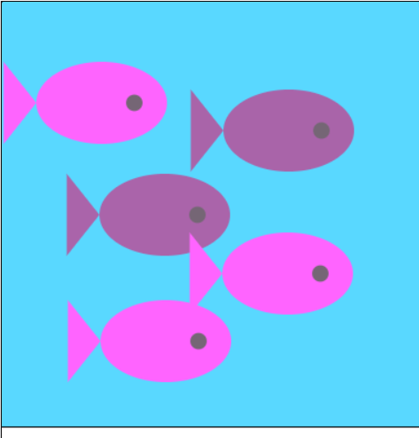

| Intro to JS [Module 1/10]
(Mandatory Module) |
||||||||||||||||||||
|---|---|---|---|---|---|---|---|---|---|---|---|---|---|---|---|---|---|---|---|---|
| Intro to JS was my first module I completed in this course and took me the longest. I definetely enjoyed completeing this module due to the ammount of fun and creative elements you are given. I also did appreciate that most of the lessons were accompined by a video created by the Khan Academy Tean to help you work through the assignments. The creative elements really impacted me as a student and taught me that if I really put the time and effort, I can make anything with whatever resources that are given to me. Java Script is a great skill to learn and it will help me with my future endeavrours involving computer science. |
| Intro to HTML/CSS [Module 2/10]
(Mandatory Module) |
||||||||||||||||||
|---|---|---|---|---|---|---|---|---|---|---|---|---|---|---|---|---|---|---|
| Intro to HTML is another mandtory module and was my last module that I completed for this course. HTML is a great skill and combining it with CSS is the dynamic duo for making websites (What you're seeing right now is a great example ;). The whole HTML/CSS is definelty something that impacted me because it is a skill that I learned from scratch and I will be sure to use it in my future with computer science. I hope to make some cooler websites in the using the power of HTML/CSS |
| Advanced JS: Games/Visualizations [Module 3/10]
(Mandatory Module) |
||||||||||||||||
|---|---|---|---|---|---|---|---|---|---|---|---|---|---|---|---|---|
| Games and Visualizations was one of the modules that I completed but stood out between the rest. It took the fun and creativity I had with Intro to JS and took it to another level by adding game elements.Simple things like scence changers and buttons were only a sample of a very fun module to complete. The final projects/games and visualitzations that were in this module is what impacted me the most as there's a differnet type of connection I made when enganging with the code and the program for this module. |
| Advanced JS: Natural Simulations [Module 4/10]
(Mandatory Module) |
||||||||||||||
|---|---|---|---|---|---|---|---|---|---|---|---|---|---|---|
| Natural Simulations was by far the hardest module and I had the most issues with it. First off, I didn't take grade 11 or 12 physics so alot of the concept they were teaching did not make much sense to me. There were also no videos for the teaching segments which made learning it a lot harder. I had to conduct reserach, ask friends for help, and even spent a lot of time troubleshooting by my self. In my case, this module affected me by making me realize resources we have around us and how we take it for granted sometimes. Understanding some basic concepts of natural simulations and the relationship it has with cimputer science will benifit me into computer science, math, and physcs courses I plan on taking over the summer or even in university. |
| Computer Science Principles - Programming [Module 5/10]
(Mandatory Module) |
||||||||||||
|---|---|---|---|---|---|---|---|---|---|---|---|---|
| Programming was an essenital module and it felt like a math course, but in computer sceince terms. One thing that did affect me was the importance of pseudocode. At first, I thought it was uselss but overtime I found it's place when coding projects and it's great for organization when planning long term projects. Programming will be useful to me if I major in computer science in post secondary as undertstaning the math language will give me a head start. |
| Creative Coding Session - Snowfall [Module 6/10]
(Mandatory Module) |
||||||||||
|---|---|---|---|---|---|---|---|---|---|---|
| This specific module was the summative for the course and I completed with my partner (Vivathen). Me and my partner collabrated well in both the working phases and the presentation phase of the summative. I had to do the coding segment and the final code was a mix between the modules ofIntro to JS, Games and Visualizations, and Natural Simulations. Completing them really helped me understand our code better and helped me present it to my peers. This module affected me as in the computer science industry, you will be required to do collabritive work and this module helped build my communication and collabration skills which will benefit me in the future. This was my first big project for computer science and I strive to continue on with creating bigger projects with the help of the skills I gained from finshing this module. |
| Learning to Learn [Module 7/10]
(Optional Module) |
||||||||
|---|---|---|---|---|---|---|---|---|
| Learning to Learn was a great intro to this course and got me settled into the nature of this course.Here is the slide that me and my partner worked on to gain it as a module. This module helped me thing of computer science as not just " another course ". One big thing that I did take away and affected me was the infuluence of who we surround our selves with. In my case, my topic was Parents so it did not apply but I still recived the message it was trying to portray. Moving on with computer science, this module taught me to do what I truley love as life isn't timeless and to do what makes us happy |
| Git N Going [Module 8/10]
(Optional Module) |
||||||
|---|---|---|---|---|---|---|
| Git N Going was a great oppurtunity for students ( like me ) to learn a great new and free resource where we host our webpages. You are reading this on my GitHub page and here is the link to my GitHub repositories. Overall, I enjoyed completing this module as it was a step-by-step tutorial on the basics of GitHub. This affected me due to the simplciity of the reosurce itself and I will continue to use it as it encourged me to use this a primary resource to host my webpages and share it with my peers when working with computer science or HTML in the future. ~~For Mr.O ~~: I completed all 8 parts for the Git N Going assingment but could not finish step 13/15 in the final part. I think it was bugged but I could not get it to work. Thanks for understanding! |
| Algorithim Exploaration - Cubing Workflow [Module 9/10]
(Optional Module) |
||||
|---|---|---|---|---|
| I would consider Cubing Workflow as another intro module as it set the base and bones for the coding and programming aspect for ICS4U. I remember working on this assignmnet and criticizing it for it being " useless " and having nothing to do with computer science. But now when I look back at it, I understand the mindset you (Mr. O) were going with when creating this assignment. This affected me as it taught me that computer science isn't just numbers and variables, but the way you approach it and your problem solving skills is really what makes up the beauty of computer science. Understanding this concept will help me in the future of computer science espcially when given a big project and having to torubleshoot my way to success. |
| Computer Science Principles - The Internet/Computing Innovation [Module 10/10]
(Optional Module) |
||
|---|---|---|
| Internet/Computing Innovation was another optional module I completed in Khan Academy. Internet: This was one of my favourite modules to complete as it explains the way the internet works and how it evolved since it was first created. This will help me out in the computing industry for computer science if I ever go into that. If not, it's just good to know. Computing Innovation: Computing Innovation is basically The Internet but the next level as it shows the innovations that mankind has created such as e-mail and SMS which would not have been here without the Internet. This was overall really good to know for the future of tech. As a module, both of these affected me as it made me think of the bigger picture and the future of tech. It made me ask myself how will computer science change with the future of tech? Will mankind be controlled by computers? Soon, will everything be reliant on technology? |
| Image Gallery Click on Image |
|---|
|  |